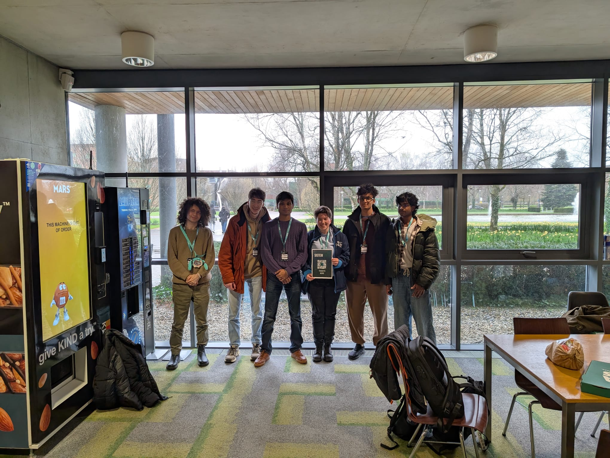

HOME
SISTEM
'25

So I attended SISTEM(Student Inter-Society Tech and Enterprise Meet-up) conference held at University of Limerick with my friends from the CS++ society.
There were various talks held by some really cool people excelling in their domains namely.
1. Anik Sarker - Reliability at google scale
2. Dr. Ruairí O'Reilly - (FAIR-MED)
3. Dr. Jim Buckley - COVID-19 App and class detection
4. Dr. Anila Majeda - Quantum Computing (oh i loved this one)
5. Dr. Tabea DeWillie - Language Digitalisation
It was an amazing experience overall.
Amazing people, amazing place.